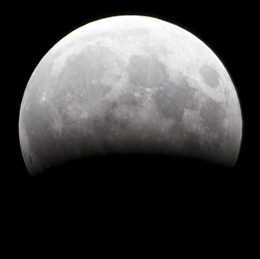
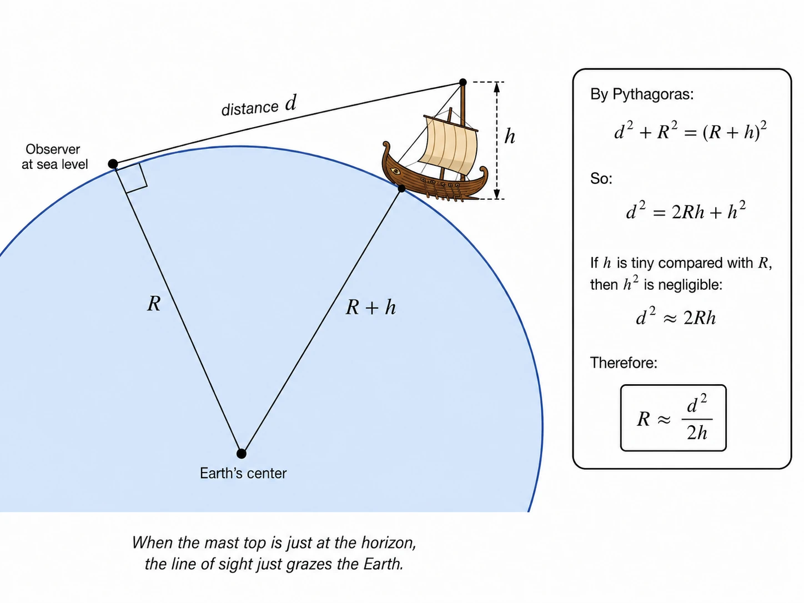
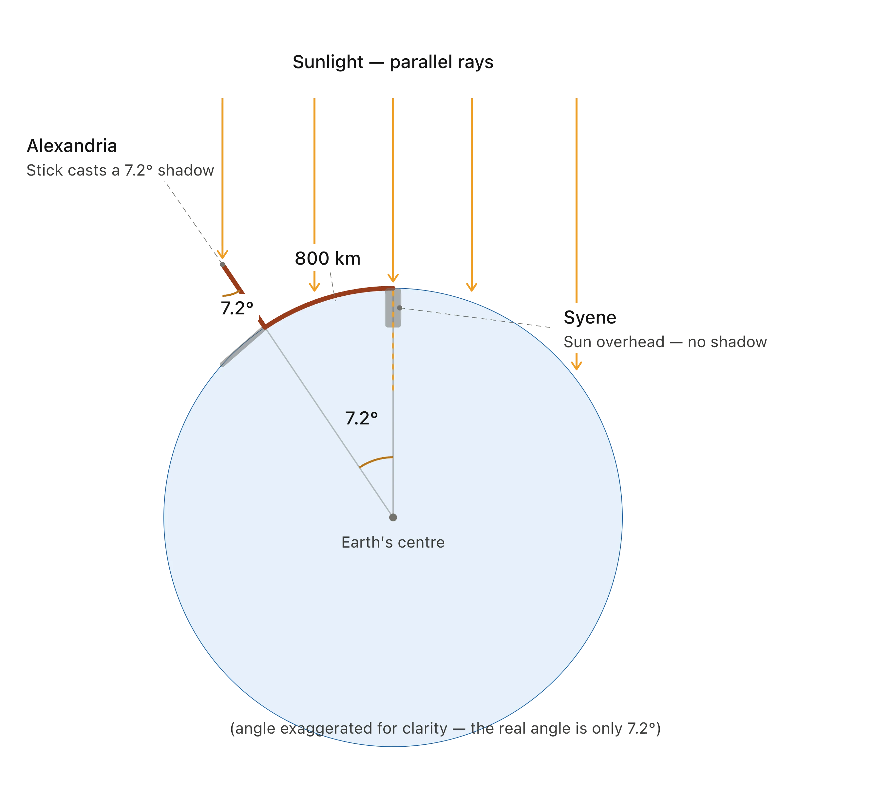
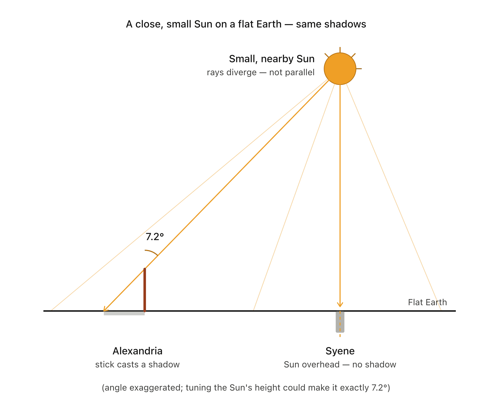
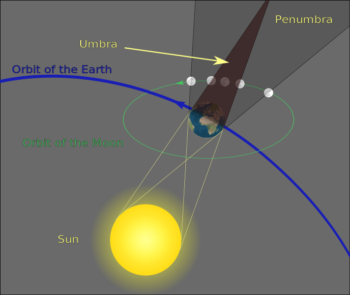
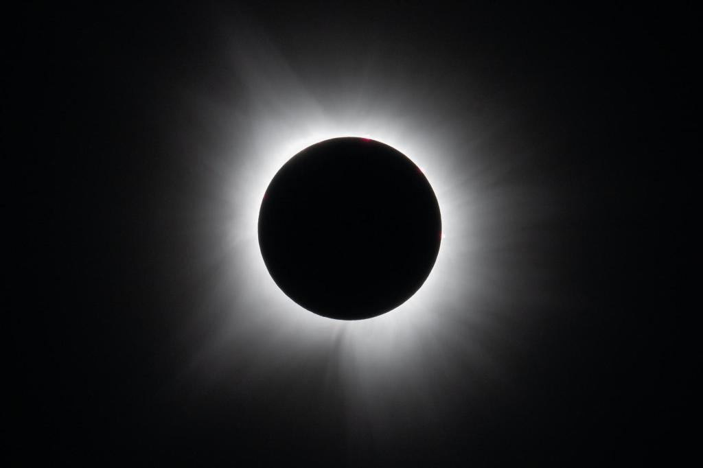
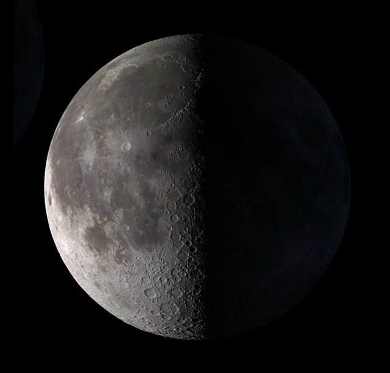
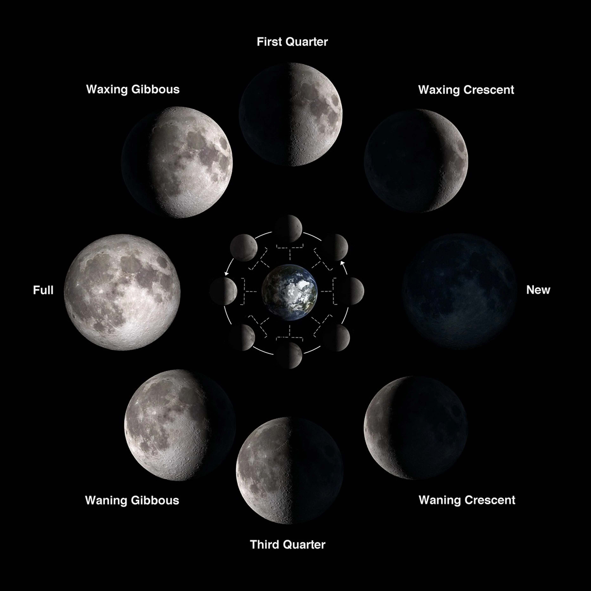
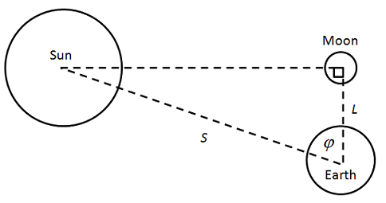

How Big Is the Sun? How Could You Figure It Out?
I’m a few chapters into Our Mathematical Universe by Max Tegmark. By this point he’s covered the ingenuities of the ancient Greeks, taking my knowledge of physics to within two and a half thousand years of the cutting edge.
And what ingenuities they were. A whole series of them, strung together, and culminating in a pretty good estimate of the size of the Sun. I think it’s a remarkable feat to even just ask the question ‘How big is the Sun?’ and recognize that it has an answer. The fact that the ancient Greeks actually managed to figure it out (more or less) is astonishing.
I don’t know the exact path they took with their reasoning. History is messy. But here’s a plausible route they could have taken, basically matching the one you’ll find charted in OMU.
Step 1: Discover that the Earth is round.
One way to discover that the Earth is round is to wait for a lunar eclipse, where the Earth casts its shadow on the Moon. If you look carefully, you’ll notice that the shadow is curved.

Another sign of Earth’s roundness is the way that departing ships disappear over the horizon: hull-first and mast-last.
Step 2: Use the disappearing-ship trick to estimate Earth’s size.
Once you know the Earth is round, you want to figure out how big it is. Here you can reuse the disappearing-ship trick. While your chosen ship is in port, measure the height h of its mast. Stand at sea level and watch it depart. Somehow know how far away the ship is at the point that its mast slips below the horizon.Maybe you attach to the ship an extremely long rope. Maybe you’ve got friends with signal fires dotted along a coast that runs parallel to the ship’s path. Maybe you’ve just got a great eye for distances. Call that distance d. With the help of your friend Pythagoras, calculate the Earth’s radius R as roughly the square of that distance divided by twice the height of the mast. In math:

Multiply your radius by 2π to get an estimate of the Earth’s circumference.
Step 3: Use Eratosthenes’ shadow trick to estimate Earth’s size again.
The estimate of Earth’s size that you get from the disappearing-ship trick might be a little off. It’s hard to know how far away the ship is at the point it vanishes from your sight, and atmospheric refraction messes you up a bit.
Eratosthenes’ shadow trick allows for a better estimate. He knew that, at noon on the summer solstice, the Sun shone straight down a well in Syene. From that he deduced that it was directly overhead at that time and place. He arranged to be in Alexandria at that time, and observed that a vertical stick there cast a shadow. From that he deduced that the Sun was not directly overhead in Alexandria. By measuring the shadow, he concluded that it was 7.2° off: one-fiftieth of a full circle. He knew that the distance between Syene and Alexandria was 800km, and he multiplied this figure by 50 to estimate the circumference of the Earth: 40,000km. That’s within 0.2% of the true value.0.19% if you compare to the equatorial circumference, and 0.02% if you compare to the meridional circumference. Carl Sagan recounts Eratosthenes’ story in this great video. Pretty incredible!

Step 4: Use the similarity of your estimates to surmise that the Sun is really far away.
Notice a crucial assumption of Eratosthenes’ calculation: the sunlight hitting the stick in Alexandria runs approximately parallel with the sunlight shining down the well in Syene. Without that assumption, you could get the mismatched shadows even on a flat Earth. Imagine a basketball-sized Sun, hovering directly above the Syene well. That would cast shadows in Alexandria even if the Earth were flat.

Thankfully, you have your earlier estimate of the Earth’s size from the disappearing-ship trick. That trick would put you in the right ballpark even if the Sun were basketball-sized and not so far away. And in fact it lets you surmise that the Sun is far away, at least if your disappearing-ship estimate and Eratosthenes’ shadow estimate turn out similar. If the Earth and Sun were close, your two estimates wouldn’t be, so if your two estimates are close, the Earth and Sun aren’t.
Step 5: Use the Sun’s distance and apparent size to infer that it’s bigger than the Earth.
Once you know the Sun is very far away, you can surmise that it’s also very big. After all, it looks pretty big. It occupies a respectable portion of your field of vision. And to do that from very far away, it must be very big. Way bigger than Earth, surely.
You’re venturing out onto shakier scientific ground here. Numbers have given way to words: ‘very far away,’ ‘very big,’ ‘Way bigger than Earth, surely.’ You could estimate the Sun’s distance numerically using the discrepancy between your two estimates of Earth’s size. That would let you estimate the Sun’s size numerically too, and compare it to the size of the Earth. But in practice, the estimates of Earth’s size that you get from the disappearing-ship trick and Eratosthenes’ shadow trick won’t be precise enough. You won’t get even a passable estimate of the Sun’s distance or size. So stick with ‘very far away’ and ‘very big’ for now. Just four (!) more steps until you can wheel back around and put some decent numbers on the Sun.
Step 6: Use the Earth’s shadow on the moon to estimate the Moon’s size.
Now you have to wait for another lunar eclipse to come around. When it does, focus on the Earth’s umbra: the fully dark part of its shadow. Using the curve, estimate the umbra’s size in Moon-widths.

Say it’s 2.7 Moon-widths. Don’t say that the Moon is 2.7 times smaller than the Earth. Since the Sun is bigger than the Earth, the Earth’s umbra on the Moon will be smaller than the Earth.

How much smaller? You can figure it out using the Sun’s angular width: how big it appears in the sky. Since you’ve worked out that the Sun is much bigger than the Earth, the rate at which the Earth’s umbra narrows is roughly equal to the Sun’s angular width. That means the amount by which the Earth’s umbra narrows on its way to the Moon is roughly:
Store that up for later, along with an expression for the size of the Moon in terms of its angular width (i.e. apparent size) and how far away it is:
Now wait for a solar eclipse and notice something awfully convenient:

The Sun and the Moon have almost exactly the same angular width! They look basically the same size. That means that your two expressions above are roughly equivalent, in which case:
So the Earth’s umbra loses a Moon-size on its way there. If the umbra looks 2.7 times wider than the Moon, the Earth is 3.7 times wider than the Moon. You know from your disappearing-ship and Eratosthenes’ shadow tricks that the Earth’s circumference is 40,000km. That means the Earth’s diameter is about 12,700km, and the Moon’s diameter is 3.7 times smaller than that: about 3,400km.
Step 7: Use the Moon’s real size and apparent size to estimate its distance.
Now you know the Moon’s size, you can estimate its distance from Earth. Hold out your arm and stick up your pinkie. At arm’s length, your pinkie covers an angle of about one degree. (Not exactly, but it’s a handy rule of thumb.) Aim it at the Moon and notice that it’s twice what you need: your pinkie could cover two Moons side by side. That means the Moon’s angular width is about half a degree. Convert to radians and divide your 3,400km Moon-width to get your Moon-distance: about 390,000km.
Step 8: Use the Moon’s distance to estimate the Sun’s distance.
Time to look out for another lunar phenomenon: the quarter moon. Don’t be lulled into complacency by sights like this:

You might think this is a half moon and that you’ve got a few more nights before the quarter comes around. Dead wrong. This half-lit moon is a quarter moon.

And you’d better act while it’s still half-lit. Look at the Moon, look at the Sun, and estimate the angle between them. If you’re anything like Aristarchus of Samos, you’ll put it at 87°.
You have to make this estimate at the quarter moon because you need the moon to be half-lit. A half-lit moon indicates that the Sun, Moon, and Earth form a right-angled triangle.

And that lets you use trigonometry to calculate the distance to the Sun. You’ve estimated that the distance to the Moon is 390,000km and that the angle between the Sun and Moon is 87°, so the distance to the Sun must be:
Step 9: Use the Sun’s distance and apparent size to estimate its real size.
Now, finally, you can estimate the Sun’s size. Like the Moon, its angular width is about half a pinkie, hence half a degree. That’s about 0.0087 in radians. Multiply that by your 7,450,000km estimate of the Sun’s distance and you have your number. The Sun is about 65,000km wide.
Epilogue
That estimate is a little off, unfortunately. The Sun is actually about 20 times larger: 1.4 million kilometers wide. The problem was Aristarchus’s 87° estimate of the angle between the Moon and the Sun. In reality, the angle is about 89.85°. Aristarchus missed the angle by 2.85°, so he missed the Sun’s size by 1.335 million kilometers.
Still, I think all this is an extraordinary success. Using only their wits and their naked eyes, and looking only at ships, sticks, and shadows, the ancient Greeks strung together nine steps of sound reasoning to answer the question ‘How big is the Sun?’, and they came up with an estimate that wasn’t beaten for almost two thousand years.By Cassini, in 1672.
You really can just figure stuff out.